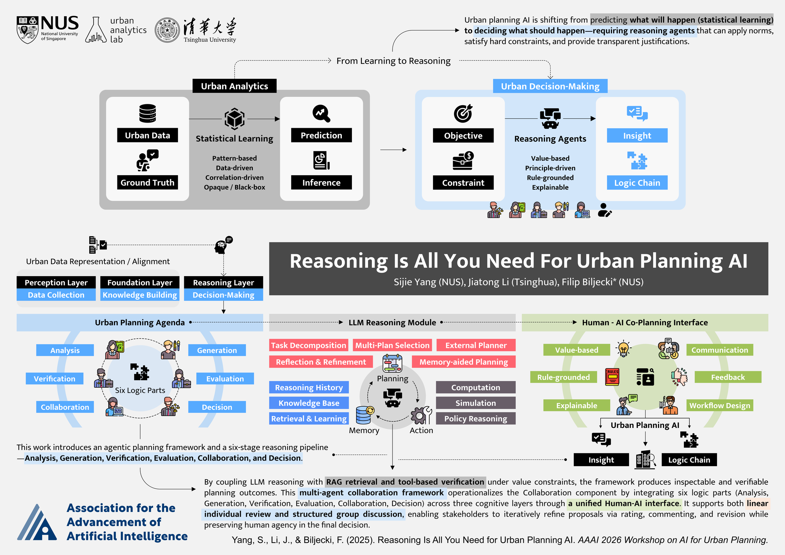
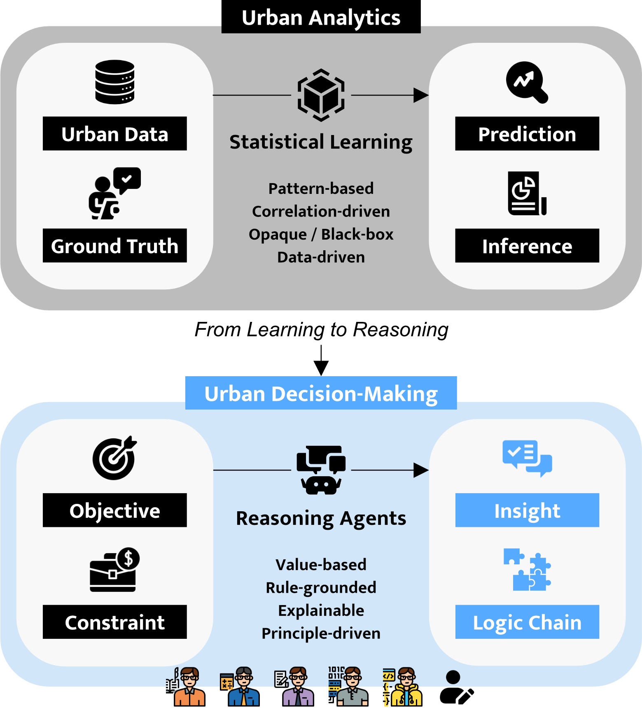
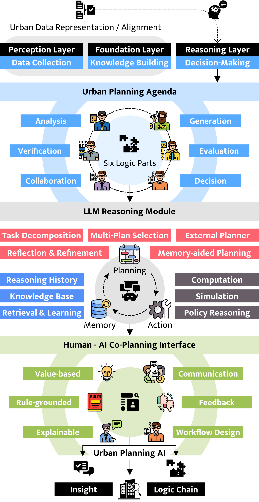
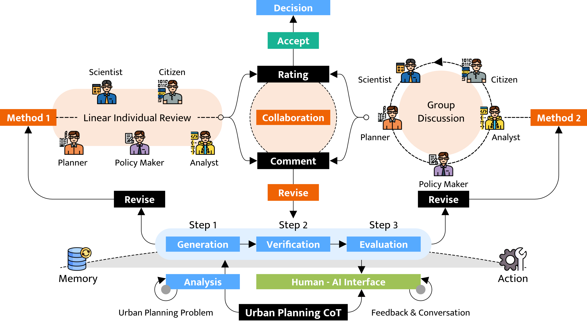

Abstract
AI has proven highly successful at urban planning analysis—learning patterns from data to predict future conditions. The next frontier is AI-assisted decision-making: agents that recommend sites, allocate resources, and evaluate trade-offs while reasoning transparently about constraints and stakeholder values. Recent breakthroughs in reasoning AI—chain-of-thought prompting, ReAct, and multi-agent collaboration frameworks—now make this vision achievable.
This position paper presents the Agentic Urban Planning AI Framework for reasoning-capable planning agents that integrates three cognitive layers (Perception, Foundation, Reasoning) with six logic components (Analysis, Generation, Verification, Evaluation, Collaboration, Decision) through a multi-agents collaboration framework. We demonstrate why planning decisions require explicit reasoning capabilities that are value-based (applying normative principles), rule-grounded (guaranteeing constraint satisfaction), and explainable (generating transparent justifications)—requirements that statistical learning alone cannot fulfill. We compare reasoning agents with statistical learning, present a comprehensive architecture with benchmark evaluation metrics, and outline critical research challenges. This framework shows how AI agents can augment human planners by systematically exploring solution spaces, verifying regulatory compliance, and deliberating over trade-offs transparently—not replacing human judgment but amplifying it with computational reasoning capabilities.
Contributions
- We compare reasoning agents with statistical learning, demonstrating why explicit reasoning is foundational for planning decisions.
- We present the Agentic Urban Planning AI Framework—a three-layer cognitive architecture (Perception, Foundation, Reasoning) integrating six logic components through a multi-agents collaboration framework, formalised with algorithms and evaluation metrics.
- We outline five critical research challenges and a path forward for building reasoning-capable planning agents that augment human judgment with computational reasoning capabilities.
Agentic Urban Planning AI Framework

Urban analytics has succeeded at prediction—learning correlations from historical data to forecast traffic, land use, emissions, and liveability. The next frontier is AI-assisted decision-making: siting, allocation, and trade-offs that must be transparent about constraints and values. Recent reasoning techniques (chain-of-thought, ReAct, multi-agent deliberation) make that path plausible.
The paper contrasts how decisions are produced. Statistical learning fits patterns from data: strong at prediction, but weak on normative principles, hard guarantees on regulations, and step-by-step justification. Reasoning agents surface explicit reasoning traces—better suited to challenging unfair historical patterns, resolving conflicting rules, and explaining “what-if” logic. Planning, the text argues, needs capabilities that are value-based, rule-grounded, and explainable, not pattern replication alone.

The Agentic Urban Planning AI Framework stacks three cognitive layers—Perception (multi-modal urban sensing and structured representations), Foundation (predictive models, LLMs, RAG, simulation), and Reasoning (goal-directed agents that deliberate, verify, and act). The paper positions RAG as a memory interface to planning knowledge, LLMs as the core reasoning engine, and reinforcement learning as both environment modelling (foundation) and policy optimisation (reasoning).
Six logic components—Analysis, Generation, Verification, Evaluation, Collaboration, Decision—orchestrate deliberation: analyse context, generate alternatives, check compliance, score normative objectives, support stakeholders, and synthesise recommendations with trade-offs. They work iteratively with humans so planners can critique chains, reprioritise, and refine proposals—aligned with value-based, rule-grounded, explainable decision support.

The Collaboration component is realised as a multi-agent workflow across the six logic parts and three layers. Method 1 (linear individual review) lets experts rate, comment, and request revisions in sequence—useful for specialised review or tight schedules. Method 2 (group discussion) supports joint deliberation, surfacing conflicts and trade-offs for contentious, participatory decisions.
Both routes share a generation–verification–evaluation pipeline behind a unified human–AI interface. The system proposes alternatives, checks hard constraints, and scores soft objectives; humans respond with ratings, comments, and revision requests. Analysis grounds proposals in perception and foundation data; collaboration turns stakeholder input into constraints for agents; the decision stage combines agent reasoning with human judgment via accept/revise paths so agency stays with planners.
Research agenda (summary)
Five open challenges from the paper:
- Constraint knowledge formalisation — encoding planning rules in machine-interpretable form while handling ambiguity and conflict.
- Reasoning quality and verification — ensuring reasoning chains are correct and complete when using LLMs.
- Scalability and efficiency — many constraints, iterative refinement, real-time interaction.
- Learning–reasoning integration — dividing labour between prediction and constraint-based reasoning.
- Fairness, equity, and value alignment — auditing biases and aligning with diverse stakeholder values.
Citation
@inproceedings{yang2026reasoning4up,
title = {Reasoning Is All You Need for Urban Planning {AI}},
author = {Yang, Sijie and Li, Jiatong and Biljecki, Filip},
booktitle = {Proceedings of the 2nd Workshop on AI for Urban Planning},
year = {2026},
organization = {Association for the Advancement of Artificial Intelligence},
note = {AI4UP @ AAAI 2026. Position paper},
url = {https://ai-for-urban-planning.github.io/AAAI26-workshop/}
}